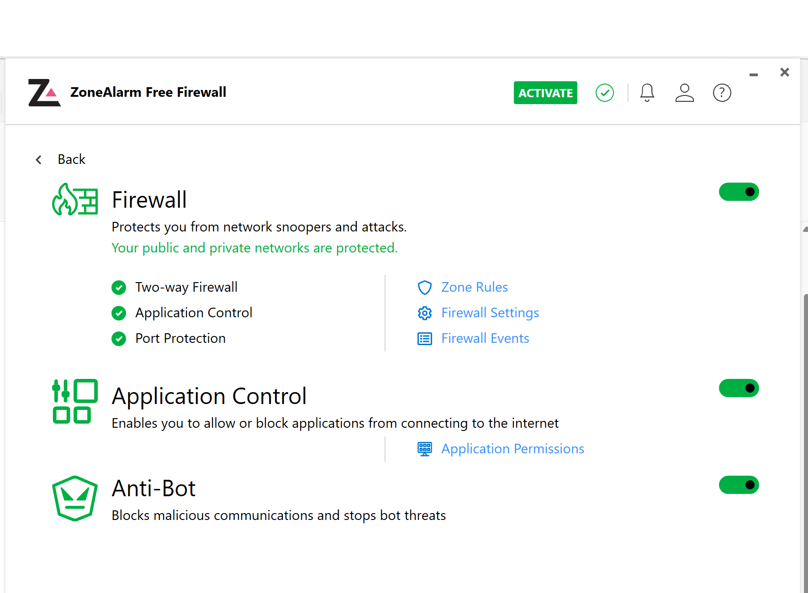
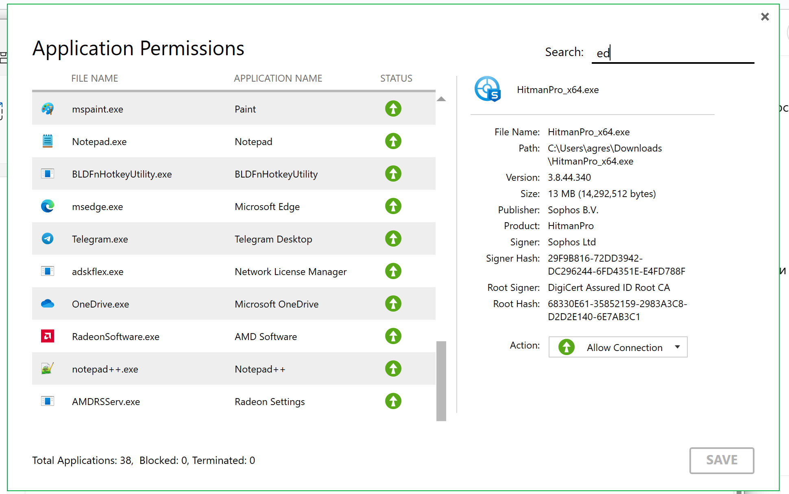
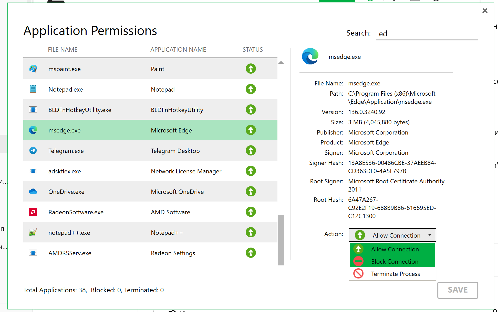
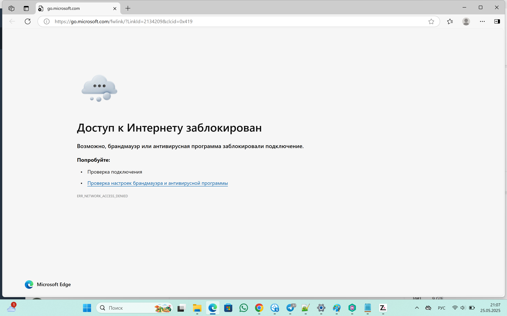
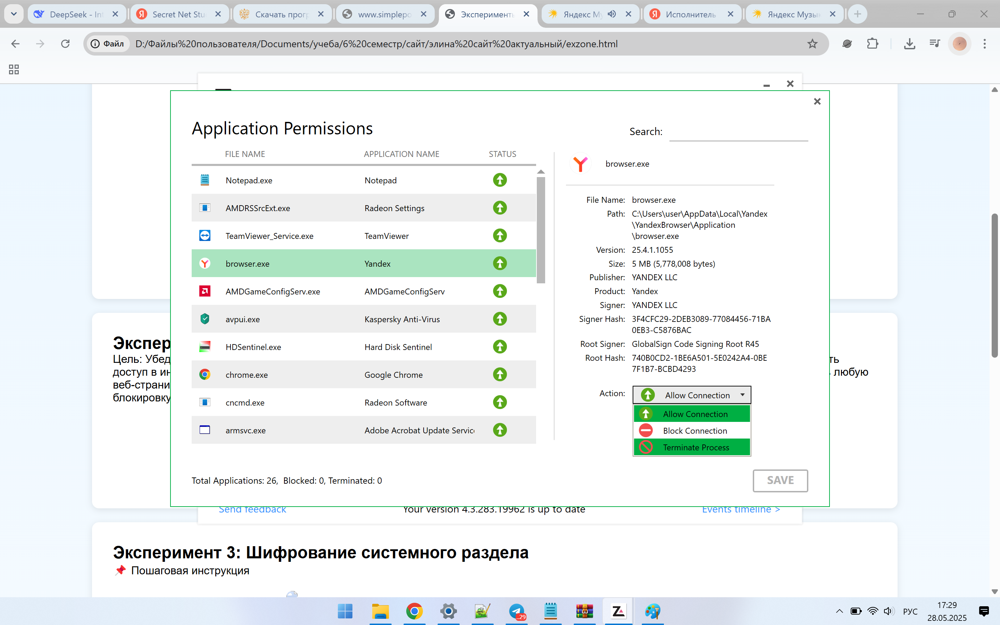
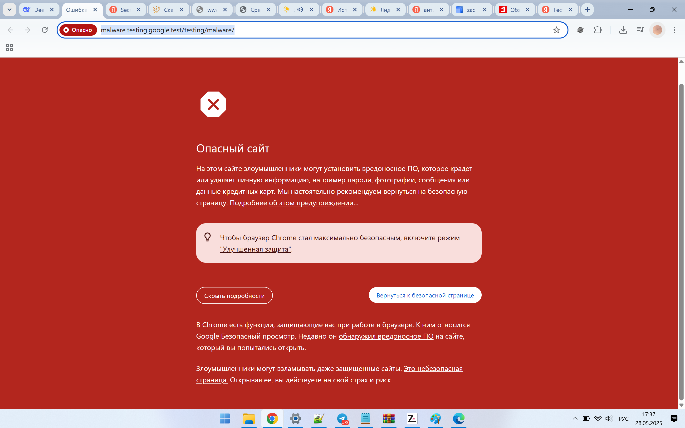
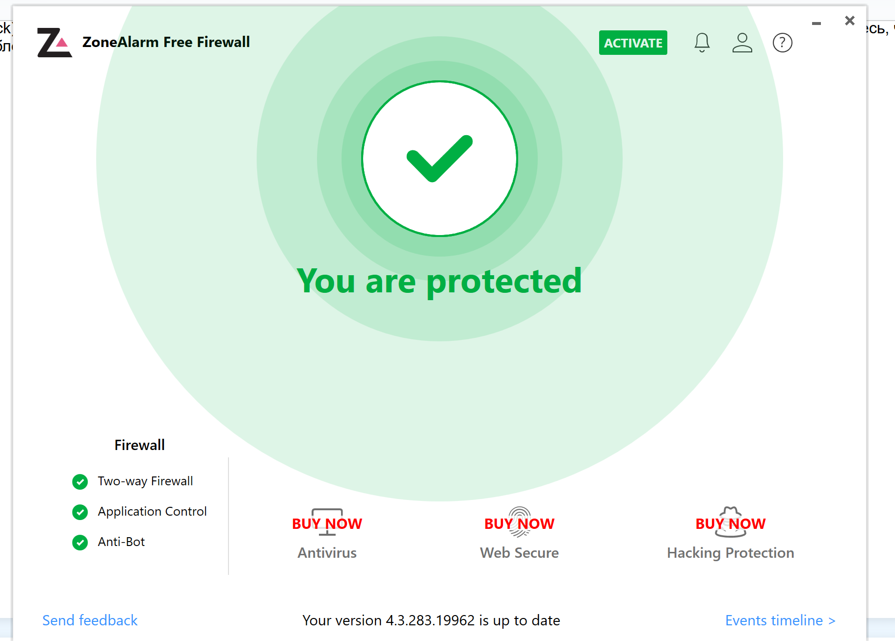
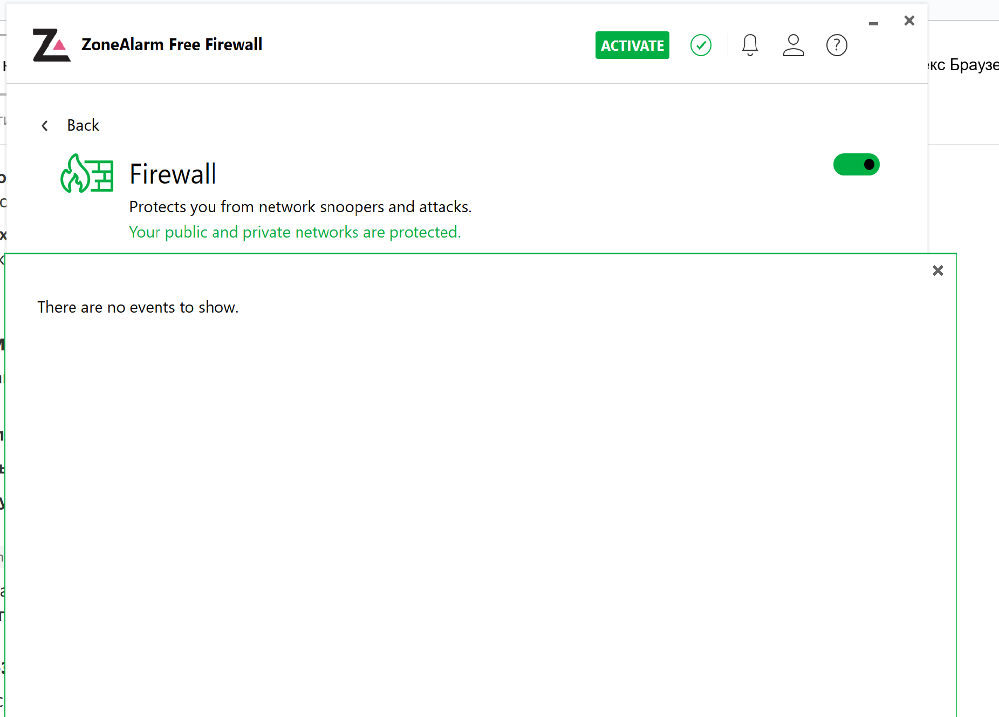
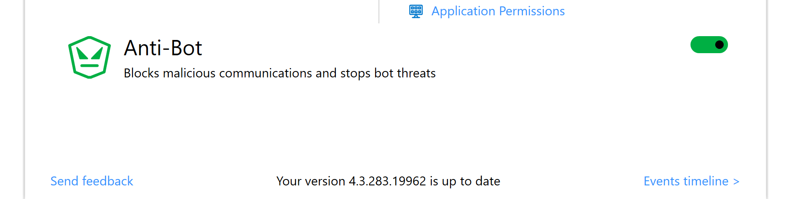

🧪 Эксперименты с ZoneAlarm
Эксперимент 1. Блокировка входящего подключения от определённой программы
Цель: Проверить, как ZoneAlarm блокирует входящее подключение от конкретного приложения. Инструкция: Установите ZoneAlarm и запустите его. Запустите любое приложение, которое использует интернет (например, TeamViewer или сервер FileZilla). Перейдите в ZoneAlarm → «Application Control» (Контроль приложений). Найдите запущенное приложение в списке и установите для него запрет входящего трафика (Inbound = Block). С другого устройства попытайтесь подключиться к вашему приложению (например, TeamViewer или FTP). Убедитесь, что подключение блокируется. Посмотрите лог ZoneAlarm: должен быть зафиксирован входящий блок.




Эксперимент 2. Приостановление работы приложения
хз пока

Эксперимент 3: Блокировка доступа для вредоносных URL
📌Тест реакции на фиктивный вредоносный URL (Проверка базовой веб-защиты) Суть: Использовать тестовую ссылку, имитирующую угрозу. Действия: Откройте браузер и перейдите по адресу: http://malware.testing.google.test/testing/malware/ (безопасный тестовый URL, признанный ESET). Инициируйте загрузку любого "файла" на странице. Наблюдайте: Блокирует ли ZoneAlarm доступ к странице/загрузке? Появится ли предупреждение в логах ("Log Viewer" → "Program")?

Эксперимент 4: Firewall events
Firewall Events в программе Zone Alarm — это события, которые фиксируются файрволом при контроле сетевой активности приложений. Программа записывает в лог все попытки подключений, нарушения правил и изменения в конфигурации файрвола. support.zonealarm.com bellmts.ca help.comodo.com Структура лога Лог Firewall Events в Zone Alarm включает следующие данные: Дата и время попытки подключения. Приложение или процесс, вызвавший событие. Действие файрвола (разрешено или заблокировано подключение). Направление подключения (входящий или исходящий). Протокол подключения (обычно TCP/IP или UDP). Исходный IP и исходный порт компьютера, сделавшего попытку подключения. Исходный IP и исходный порт компьютера, к которому было направлено подключение. Исходящий IP и исходящий порт компьютера, к которому была направлена попытка подключения. help.comodo.com Настройка параметров В настройках Zone Alarm можно контролировать ведение лога Firewall Events: Включить или отключить запись событий. Настроить уровень детализации информации в логе. Установить частоту архивирования файла лога (по умолчанию — каждые 7 дней). ixbt.com support.zonealarm.com События, зафиксированные в логе, можно просмотреть на вкладке Log Viewer в интерфейсе программы. support.zoneal


Эксперимент 5: Anti Bot
Возможно, имелась в виду функция ZoneAlarm Anti-Ransomware, которая защищает систему от программ-вымогателей. Программа анализирует все подозрительные действия на компьютере. Она обнаруживает атаки программ-вымогателей, блокирует их и немедленно восстанавливает любые зашифрованные файлы. zonealarm.com
